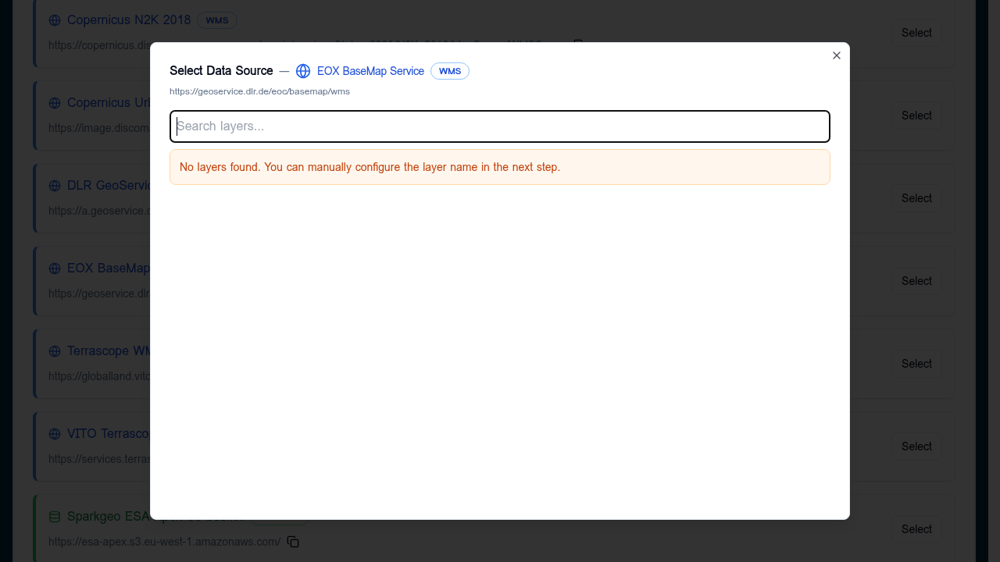

WMS / WMTS / WFS¶
OGC services that the builder consumes via GetCapabilities. WMS and WMTS
return rendered raster tiles; WFS returns vector features.
When to use¶
- WMS — server-rendered raster maps, e.g. EEA, Copernicus, GeoServer endpoints. Good when the publisher controls the styling.
- WMTS — pre-cached raster tiles. Faster than WMS for global basemaps.
- WFS — server-side vector queries. Use when the dataset is too large to ship as a single GeoJSON/FlatGeoBuf.
For all three you must add the service first on the Services tab so the builder can read its capabilities.
Add a WMS/WMTS/WFS layer¶
In a Layer Card → Datasets → Add Dataset, choose From Service and pick the service. The builder loads the capabilities and shows a layer picker.

- If layers are listed: search, click one, Select.
- If the picker reports no layers (capabilities blocked, CORS, or unusual schema), close it and use Direct Connection instead — the form will let you type the layer name by hand.
Direct connection¶
Pick Direct Connection, set Data Format to WMS, WMTS, or WFS, and provide:
| Field | Notes |
|---|---|
| Data Source URL | Base endpoint without query string (e.g. https://example.org/geoserver/ows). |
| Layer Name | The OGC layer or feature type identifier (workspace:layer). |
The placeholder in the URL field shows the expected shape per format.
Custom parameters (WMS only)¶
WMS layers support an optional Parameters section in the data source
editor (visible after choosing WMS as the data format). Click
Add Parameter to create key / value pairs. These are appended to every
map request made by the deployed Explorer — useful for authentication tokens,
server-side style selection, or vendor extensions.
Values can be strings, numbers, or booleans. Example configuration:
{
"url": "https://eccharts.ecmwf.int/wms/",
"format": "wms",
"layers": "composition_pm2p5",
"parameters": {
"token": "public",
"styles": "default",
"transparent": true,
"tiled": 1
}
}
Reserved keys¶
The following keys are managed automatically by the viewer and cannot be overridden through custom parameters:
timelayersserviceversionrequest
Persistence¶
Parameters are preserved across all builder operations:
- Import / Export — included in the exported JSON and restored on import.
- Copying layers — copied to the duplicate layer.
- Editing — retained when you reopen a data source for editing.
WMTS and WFS layers do not expose this editor.
Validation¶
- The healthcheck calls
GetCapabilitiesand confirms the named layer is present. - Common failures: missing
https://, the endpoint requires authentication, or CORS isn't enabled for the deployed Explorer's origin.
Tips¶
- Prefer WMTS over WMS for basemaps — much lower latency.
- Pin the time/CRS in the layer URL when the service offers multiple, so the deployed Explorer always requests the version you tested with.
- For WFS, watch the response size; the deployed Explorer pulls the full feature collection in the viewport.